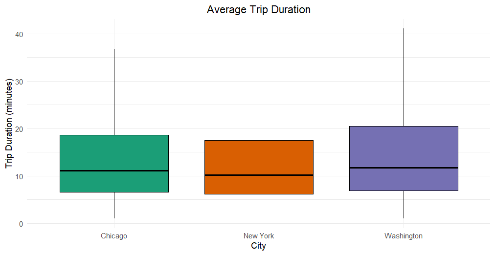

In this project I look at three data sets about a rideshare program that spans three major metropolitan areas: Washington, Chicago, and NYC. I explore this data using R Studio and find that:
- The most popular month to use rideshares is June.
- Rideshares were more popular in Washington than NYC or Chicago.
- 75% of rides were between 5 and 20 minutes.
Libraries and Data
I'll start by adding this project's libraries and reading in the data.
library('ggplot2')
library('lubridate') #for changing date/time variables
library(dplyr) #for 'groupby' function
library(RColorBrewer) #for help coloring graphs
#navigate to the project directory:
pwd <- "[hidden]"
setwd(pwd)
#read in data:
ny = read.csv('new_york_city.csv')
wash = read.csv('washington.csv')
chi = read.csv('chicago.csv')
#Look at a sample:
head(ny)
#output:
X Start.Time End.Time Trip.Duration Start.Station End.Station User.Type Gender Birth.Year
1 5688089 2017-06-11 14:55:05 2017-06-11 15:08:21 795 Suffolk St & Stanton St W Broadway & Spring St Subscriber Male 1998
2 4096714 2017-05-11 15:30:11 2017-05-11 15:41:43 692 Lexington Ave & E 63 St 1 Ave & E 78 St Subscriber Male 1981
3 2173887 2017-03-29 13:26:26 2017-03-29 13:48:31 1325 1 Pl & Clinton St Henry St & Degraw St Subscriber Male 1987
4 3945638 2017-05-08 19:47:18 2017-05-08 19:59:01 703 Barrow St & Hudson St W 20 St & 8 Ave Subscriber Female 1986
5 6208972 2017-06-21 07:49:16 2017-06-21 07:54:46 329 1 Ave & E 44 St E 53 St & 3 Ave Subscriber Male 1992
6 1285652 2017-02-22 18:55:24 2017-02-22 19:12:03 998 State St & Smith St Bond St & Fulton St Subscriber Male 1986
The Most Popular Month for Rideshares
Next, I'll clean the data a bit and then answer my first question: what's the most popular month for rideshares?
#Find data types of Start.Time
print(str(ny$Start.Time))
#output:
chr [1:54770] "2017-06-11 14:55:05" "2017-05-11 15:30:11" "2017-03-29 13:26:26" "2017-05-08 19:47:18" "2017-06-21 07:49:16" ... NULL
#Start.Time is a "chr" or character datatype. I'll change this to POSIX to make it easier to extract the month from the Start.Date.
#First, make a copy of the data:
ny_copy<-data.frame(ny)
wash_copy<-data.frame(wash)
chi_copy<-data.frame(chi)
#Convert Start.Time to POSIX
ny_copy$Start.Time <- as.POSIXlt(as.character(ny$Start.Time), format="%Y-%m-%d %H:%M:%S")
wash_copy$Start.Time <- as.POSIXlt(as.character(wash$Start.Time), format="%Y-%m-%d %H:%M:%S")
chi_copy$Start.Time <- as.POSIXlt(as.character(chi$Start.Time), format="%Y-%m-%d %H:%M:%S")
#Create a new variable to hold the Start.Time month:
ny_copy$Start.Month <- ny_copy$Start.Time$mon+1
wash_copy$Start.Month <- wash_copy$Start.Time$mon+1
chi_copy$Start.Month <- chi_copy$Start.Time$mon+1
#Plot a histogram of Start.Month:
options(repr.plot.width = 3.1, repr.plot.height =2)
ggplot(aes(x = Start.Month), data = ny_copy) +
geom_histogram(binwidth = 1, color = 'black', fill = '#F79420') +
scale_x_continuous() +
ggtitle('Rides Per Month in New York') +
labs(x = "Month", y = "Rides")
#(repeated with each city)
It looks clear that the most popular month is June for all three cities, but I'll verify that numerically. First, I'll have to convert Start.Time to Date because the library I'm going to use to group by the month doesn't work with POSIX:
#Convert Start.Time to Date: because tidyverse doesn't work with POSIX
ny_copy$Start.Time <- as.Date(as.character(ny_copy$Start.Time), format="%Y-%m-%d")
wash_copy$Start.Time <- as.Date(as.character(wash_copy$Start.Time), format="%Y-%m-%d")
chi_copy$Start.Time <- as.Date(as.character(chi_copy$Start.Time), format="%Y-%m-%d")
#use a group_by function to group total rides into the month when they started:
ny_group_month = ny_copy %>%
group_by(Start.Month) %>%
summarise(total_rides = n())
#^repeated for each city. Output for NY, Washington, and Chicago:
Start.Month total_rides1 5745 | 1 8946 | 1 650 2 6364 | 2 11563 | 2 930 3 5820 | 3 12612 | 3 803 4 10661 | 4 18522 | 4 1526 5 12180 | 5 17072 | 5 1905 6 14000 | 6 20335 | 6 2816 | NA NA |
Here, I've confirmed numerically that the busiest month in each region is June (the sixth month). NY saw 84,000 riders in June, while Washington saw 122,010 and Chicago saw 16,896.
Most Popular Month, Summary:
The bikeshare app sees the most use in June. Data was apparently not collected for the months of July through December, but of the months for which we have data, June was the most popular. Another interesting find is that both New York and Chicago have a little bit of a usage bump in February. For the most part, ridership increases each month along with the temperature, but in the sample we have, February saw just a few more riders than March. Perhaps this can be explained by a weather or cultural phenomenon, or a discount on app fees.
Most Popular Stations
Next, I'll find the most popular station in each city to start a ride. I'll start by making a histogram, just to see what the data looks like:
ggplot(aes(x = Start.Station), data = ny) +
stat_count(width = 0.5, color = 'black', fill = '#F79420') + #Using stat_count instead of geom_histogram b/c var is discrete
ggtitle('Rides by Starting Station - New York') +
labs(x = "Station", y = "Rides")
Oops! Too much data; I can't read the labels. I'll refine this data so we only look at stations with the most rides. I'll use this histogram, as well as ones for Washington and Chicago, to determine what a good threshhold is for each city:
- NY: rides > 300
- Wash: rides > 1000
- Chi: rides > 100
#group the dataframes by the start station, and then provide a count of each station:
wash_start_stations = count(wash, Start.Station) ny_start_stations = count(ny, Start.Station) chi_start_stations = count(chi, Start.Station)#remove stations with fewer than the threshhold number of bikeshare starts:
wash_stations_refined <- subset(wash_start_stations, n>1000) ny_stations_refined <- subset(ny_start_stations, n>300) chi_stations_refined <- subset(chi_start_stations, n>100)#Look at the data:
ny_stations_refined
output:Start.Station n 65 8 Ave & W 31 St 316 66 8 Ave & W 33 St 302 113 Broadway & E 22 St 383 231 E 17 St & Broadway 380 467 Pershing Square North 592 554 W 20 St & 11 Ave 329 557 W 21 St & 6 Ave 385 625 West St & Chambers St 364
Pershing Square Station is the most popular in N.Y. with 592 starts over six months. Pershing Square Station is where most people start their bikeshare journeys when in New York. This app must not be as popular in NY. Lets look at the other cities and also plot their top stations on bar graphs:
chi_stations_refined |wash_stations_refined
output: | output:
Start.Station n | Start.Station n
<chr> <int> | <chr> <int>
66 Canal St & Adams St 101 |51 15th & P St NW 1040
115 Clinton St & Madison St 102 |210 Columbus Circle / Union Station 1700
119 Clinton St & Washington Blvd 120 |282 Jefferson Dr & 14th St SW 1488
250 Lake Shore Dr & Monroe St 140 |283 Jefferson Memorial 1068
422 Streeter Dr & Grand Ave 210 |306 Lincoln Memorial 1546
|321 Massachusetts Ave & Dupont Circle NW 1219
|422 Smithsonian-National Mall / Jefferson Dr & 12th St SW 1010
Bikesharing doesn't look like it's taken off in Chicago, either; its most popular station had 210 people start a bikeshare trip. That station was Streeter Dr. & Grand Ave.
Washington is where the money is at right now. Its most popular station for starting a trip was Columbus Circle/Union Square, where 1700 trips started. Next, we'll look at the same details for Washington as a bar graph:
#Helpful resource for bar plots: https://statisticsglobe.com/barplot-in-r. Also stack overflow.
options(repr.plot.width = 9, repr.plot.height =3)
par(mar=c(4.5,21.5,1,1)+.1)
barplot(wash_stations_refined$n,names.arg=wash_stations_refined$Start.Station, las=2, col='lightblue', horiz=TRUE)
#par(mar=c(bottom, left, top, right)+.1) ** this is how to adjust margins
#las=2 ** this is how to set labels parallel to the bars
title(main="Most popular stations in Washington",
xlab="Rides starting from each station")
Most Popular Starting Station, Summary:
The most popular station at which to start a ride was Columbus Circle/Union Station in Washington, with 1700 ride starts. The next six most popular stations were also in Washington. The most popular station in New York was Pershing Square North, and the most popular station in Chicago was Streeter Dr. & Grand Ave.
Average Travel Time
Lastly, I'll find the average travel time in each city. We can compare different measures of "average" numerically using the 'summary' function and visually using box plots. It will be easier to compare numbers and boxplots if the data is combined into one dataframe, so I'll combine all datasets into one master dataset.
#make sure that each dataframe has the same columns
str(ny)
output:
'data.frame': 54770 obs. of 9 variables:
$ X : int 5688089 4096714 2173887 3945638 6208972 1285652 1675753 1692245 2271331 1558339 ...
$ Start.Time : chr "2017-06-11 14:55:05" "2017-05-11 15:30:11" "2017-03-29 13:26:26" "2017-05-08 19:47:18" ...
$ End.Time : chr "2017-06-11 15:08:21" "2017-05-11 15:41:43" "2017-03-29 13:48:31" "2017-05-08 19:59:01" ...
$ Trip.Duration: int 795 692 1325 703 329 998 478 4038 5132 309 ...
$ Start.Station: chr "Suffolk St & Stanton St" "Lexington Ave & E 63 St" "1 Pl & Clinton St" "Barrow St & Hudson St" ...
$ End.Station : chr "W Broadway & Spring St" "1 Ave & E 78 St" "Henry St & Degraw St" "W 20 St & 8 Ave" ...
$ User.Type : chr "Subscriber" "Subscriber" "Subscriber" "Subscriber" ...
$ Gender : chr "Male" "Male" "Male" "Female" ...
$ Birth.Year : num 1998 1981 1987 1986 1992 ...
str(wash)
output:
'data.frame': 89051 obs. of 7 variables:
$ X : int 1621326 482740 1330037 665458 1481135 1148202 1594275 1601832 574182 327058 ...
$ Start.Time : chr "2017-06-21 08:36:34" "2017-03-11 10:40:00" "2017-05-30 01:02:59" "2017-04-02 07:48:35" ...
$ End.Time : chr "2017-06-21 08:44:43" "2017-03-11 10:46:00" "2017-05-30 01:13:37" "2017-04-02 08:19:03" ...
$ Trip.Duration: num 489 403 637 1827 1549 ...
$ Start.Station: chr "14th & Belmont St NW" "Yuma St & Tenley Circle NW" "17th St & Massachusetts Ave NW" "Constitution Ave & 2nd St NW/DOL" ...
$ End.Station : chr "15th & K St NW" "Connecticut Ave & Yuma St NW" "5th & K St NW" "M St & Pennsylvania Ave NW" ...
$ User.Type : chr "Subscriber" "Subscriber" "Subscriber" "Customer" ...
str(chi)
output:
'data.frame': 8630 obs. of 9 variables:
$ X : int 1423854 955915 9031 304487 45207 1473887 961916 65924 606841 135470 ...
$ Start.Time : chr "2017-06-23 15:09:32" "2017-05-25 18:19:03" "2017-01-04 08:27:49" "2017-03-06 13:49:38" ...
$ End.Time : chr "2017-06-23 15:14:53" "2017-05-25 18:45:53" "2017-01-04 08:34:45" "2017-03-06 13:55:28" ...
$ Trip.Duration: int 321 1610 416 350 534 586 281 723 689 493 ...
$ Start.Station: chr "Wood St & Hubbard St" "Theater on the Lake" "May St & Taylor St" "Christiana Ave & Lawrence Ave" ...
$ End.Station : chr "Damen Ave & Chicago Ave" "Sheffield Ave & Waveland Ave" "Wood St & Taylor St" "St. Louis Ave & Balmoral Ave" ...
$ User.Type : chr "Subscriber" "Subscriber" "Subscriber" "Subscriber" ...
$ Gender : chr "Male" "Female" "Male" "Male" ...
$ Birth.Year : num 1992 1992 1981 1986 1975 ...
New York and Chicago have the same columns. Washington is missing 'Gender' and 'Birth.Year' This analysis will not use either of those variables, so I'll add 'null' columns with those values to the wash dataframe, and I'll also add a 'city' column to all 3 dataframes:
#Add 'city,' 'gender,' and 'birth.year' columns:
ny$city = "New York" chi$city = "Chicago" wash$city = "Washington" wash$Gender = NULL wash$Birth.Year = NULL#Concatenate the dataframes:
master_set <- bind_rows(ny, wash, chi)
#compare the cities using a table:
by(master_set$Trip.Duration, master_set$city, summary)
Output:
master_set$city: Chicago
Min. 1st Qu. Median Mean 3rd Qu. Max.
60.0 394.2 670.0 937.2 1119.0 85408.0
------------------------------------------------------------
master_set$city: New York
Min. 1st Qu. Median Mean 3rd Qu. Max. NA's
61.0 368.0 610.0 903.6 1051.0 1088634.0 1
------------------------------------------------------------
master_set$city: Washington
Min. 1st Qu. Median Mean 3rd Qu. Max. NA's
60.3 410.9 707.0 1234.0 1233.2 904591.4 1
Washington had the longest median and mean trips at 707 seconds (11.8 minutes) and 1234 seconds (20.6 minutes), respectively, but the difference between cities doesn't look very pronounced. Let's see some box plots.
ggplot(master_set, aes(x=city, y=Trip.Duration/60, color=city, fill=city)) +
geom_boxplot(outliers=FALSE) +
theme(legend.position = "none", plot.title=element_text(hjust=0.5)) +
scale_fill_brewer(palette="Dark2") +
scale_color_manual(values = c("black", "black", "black")) +
labs(title="Average Trip Duration", x="City", y="Trip Duration (minutes)")

These boxplots show that average trip duration is similar regardless of the city. In each city, 75% of all rides are roughly between 5 and 20 minutes, which sounds like a short commute or grocery trip. That's kind of cool, but now I'm curious about how often people take these bikes on long pleasure trips, like for an hour or more.
ggplot(subset(master_set, Trip.Duration > (1*60*60)), aes(x=city, y=Trip.Duration/60, color=city, fill=city)) +
geom_boxplot(outliers=FALSE) +
theme(legend.position = "none", plot.title=element_text(hjust=0.5)) +
scale_fill_brewer(palette="Dark2") +
scale_color_manual(values = c("black", "black", "black")) +
labs(title="Average Long Trip Duration", x="City", y="Trip Duration (minutes)")
This is kind of interesting; when we look at longer trips, New Yorkers seem to like them a little bit more than Chicagoans or Washingtonians. Now I'm curious about what stations these longer trips start at.
#Subset the data to make analysis easier:
long_ride_master_set <- subset(master_set, Trip.Duration > (60*60)) #trips longer than an hour
#Plot these stations on an ugly histogram to see what stands out:
ggplot(aes(x = Start.Station), data = long_ride_master_set) +
stat_count() + #Using stat_count instead of geom_histogram b/c var is discrete
ggtitle('Long Rides by Starting Station') +
labs(x = "Station", y = "Rides")
The most popular stations have more than 100 rides starting at them. I'll refine the data further so that we only get stations that have more than a hundred rides.
long_ride_master_set_stations = count(long_ride_master_set, Start.Station) #new dataframe with start station counts
popular_long_ride_stations <- subset(long_ride_master_set_stations, n>100) #refined ^ to stations with more than 100 counts
plot bar graph:
barplot(popular_long_ride_stations$n,names.arg=popular_long_ride_stations$Start.Station, las=2, col='lightblue', horiz=TRUE)+
title(main="Most Popular Stations for Long Rides",
xlab="Rides starting from each station")
This is kind of interesting; it looks like these long rides are probably used for tourism. The Smithsonian/National Mall is a very popular tourist spot in Washington, as is the Lincoln Memorial. I had to perform an internet search on Jefferson Dr, and I found that it's intersection with 12th St. SW is also a popular DC area where they have, for example, the cherry blossom festival. That's two blocks away from 14th St SW, but I'll bet it's also related to tourism.
Average Travel Time, Summary:
Washington users have slightly longer trips, on average, but the difference is very small. Almost 75% of all trip lengths in each city are between 5 and 20 minutes, as if the bikes are being used for a short commute or grocery trip. While this makes up the bulk of bikeshare use, there is also a subset of users who take the bikes touring around Washington landmarks for an hour or more.